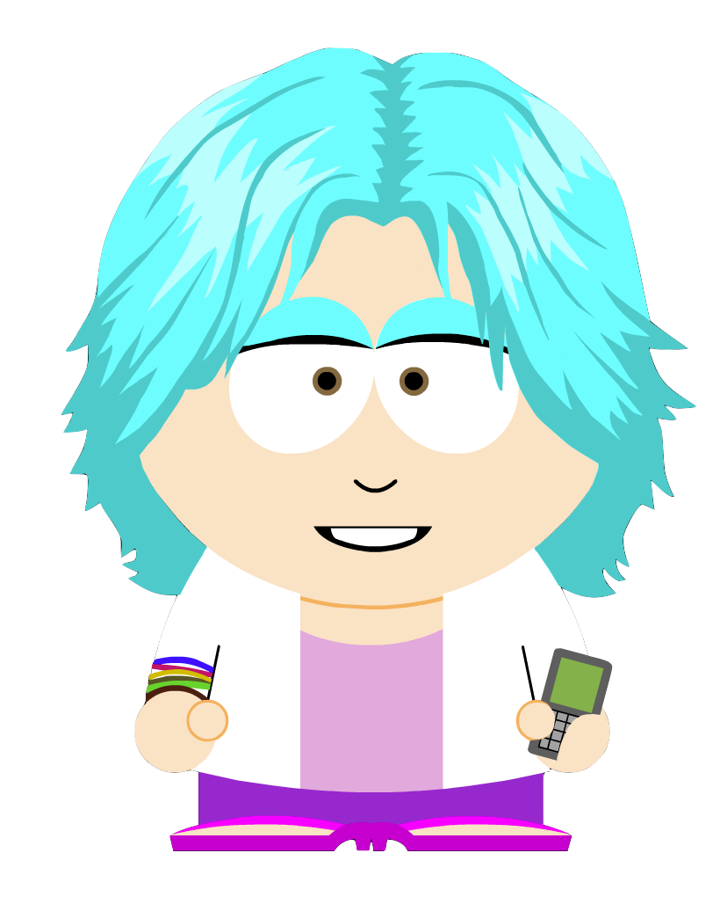

First Mission
Hi, I'm M, and I'm glad to see I've got some help. I've been working hard to make it easy to instruct the RVs. Each has a window into its mind where you can tell it what to do. We call the window a console and the commands we want it to do is code and a mission to accomplish is a program. Go it?
Good. I see this will be easy.
The first mission is pretty simple. We'll have the RV move out from its base station 10 meters, and then drive backwards 10 meters back. This is just to get your feet wet.
Here is a console, and I've already typed the code that makes up the
mission. Pretty simple since I have a commands called forward and
backward:
rv.connect("0-875E-65297D640A2D")
rv.forward(4)
rv.backward(4)
rv.dock()
First, you'll notice that everything starts with rv. That shows you what I
made, and I'm pretty proud of it. The first command, connect links
your console with a particular RV. Don't worry about the garbely-gook
in the quotes, that is just the key to identify a particular RV. That
one is in a particular lab with a nice, clear floor.
We move the RV forward 4 meters, and then backwards 4 meters. Once it is done, we have it attach itself back to the base station. If it doesn't have that command, it can be communicated and becomes lost.
In the lab, it isn't so much of a problem, since the technicians there, we just pick it up and re-connect it. However, if your RV is roving around a dustball around Alpha Centaurii, we have to send a new ship through the right worm hole… at least, until the government agencies decide that worm hold travel is safe for humans.
Let's try another lab mission. The wheels on most RVs are geared weirdly, and use more energy going backwards than forwards. Each RV has only so much energy before it needs to dock and recharge.
This console connects to an RV with 30 milliblahs of energy. Moving forward takes 1 of these. Yeah, we built these robots to make the math easy. Ha ha!
See how far away you can move the RV with that limited amount of energy.
The rv.left and rv.right take a number of degrees to turn the
RV. So saying rv.left(90) will tell the RV to turn to the left
90°. Make sense?
rv.connect("1-875E-65297D640A2D");
rv.forward(10)
rv.left(180)
rv.forward(10)
rv.dock()
The easiest option is to go forward 30 meters and turn around 180°, but what would be the fewest number of turns without following in the same steps? Sure, a triangle would work. What would be the best triangle path that got your the furthest away?
Here is the console to a lab RV with my best solution:
rv.connect("2-875E-65297D640A2D");
rv.forward(10)
rv.left(90)
rv.forward(1)
rv.left(150)
rv.forward(11)
rv.dock()
Here is a console to another RV in a lab, but this warehouse isn't all nice, smooth cement. This one is partly covered in loose sand. This means, that the RV slips, so while you may say, move forward 1 meter, it doesn't really travel that far.
This is important when trying to make sure you have enough energy to get back to the base station. Let's start by moving forward 14 meters, turn completely around and move back 14 meters. How far do you think we will have traveled?
rv.connect("3-875E-65297D640A2D"); rv.forward(14); rv.left(180); rv.forward(14); return rv.dock();
<link href="http://code.jquery.com/ui/1.10.3/themes/ui-darkness/jquery-ui.css" rel="Stylesheet"/> <script src="http://underscorejs.org/underscore-min.js" type="text/javascript"></script> <script src="http://code.jquery.com/jquery-1.9.1.js" type="text/javascript"></script> <script src="http://code.jquery.com/ui/1.10.3/jquery-ui.js"></script> <script src="http://jashkenas.github.com/coffee-script/extras/coffee-script.js" type="text/javascript" charset="utf-8"></script> <link href="styles/main.css" type="text/css" rel="Stylesheet" /> <link href="styles/console.css" type="text/css" rel="Stylesheet" />
<script src="scripts/console.js" type="text/javascript"></script> <script src="scripts/veeps-rv-1.js" type="text/javascript"></script>